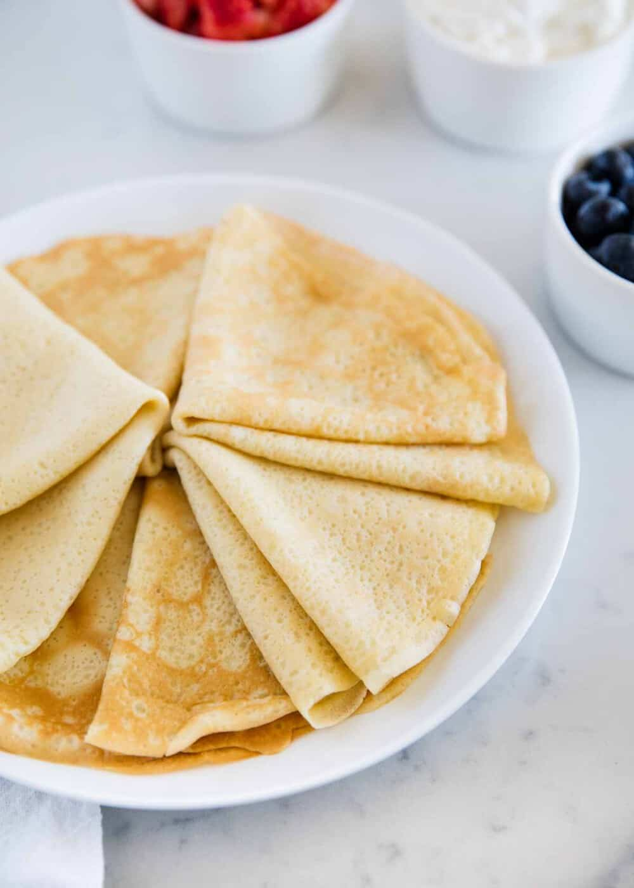

Crepes
Odin recipes

Description
The perfect crepe recipe to make for any occasion and completely delicious!
Ingredients
- 4 eggs
- mineral water
- lemon
- rum
- flour
- sugar
- vanilla sugar
- salt
- oil
Steps
- In a large bowl, add whole eggs, sour or mineral water, milk and mix everything well
- Add lemon (grated rind of unsprayed lemon) rum as desired (definitely recommend to put) then smooth flour, vanilla sugar, sugar and salt
- Mix everything well and let the pancake mixture stand for 10 minutes
- Meanwhile, heat the pancake pan well, preferably with a non-stick base
- Coat a hot pan with a brush and very little oil, then put about 1 dl of pancake mixture, so that it finally turns out thin and you end up with 20 pieces of pancakes
- Fry one side for about half a minute, turn over and continue to fry the other side of the pancake for about 20 seconds
- And the recipe for 20 pieces of pancakes is ready and ready to serve